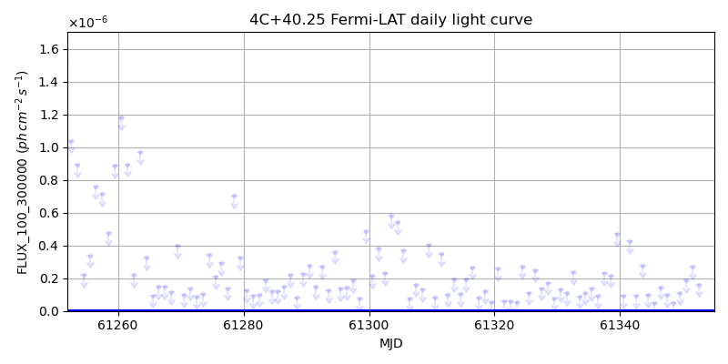
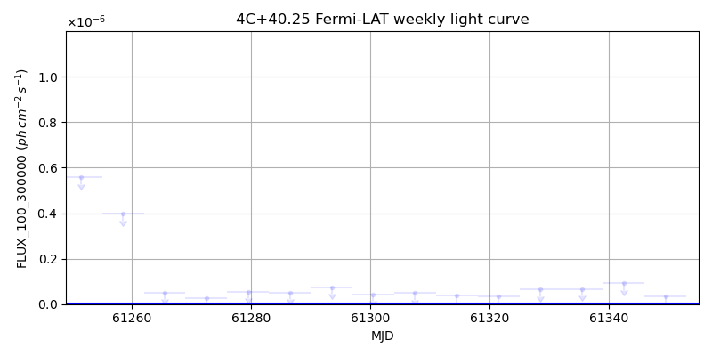
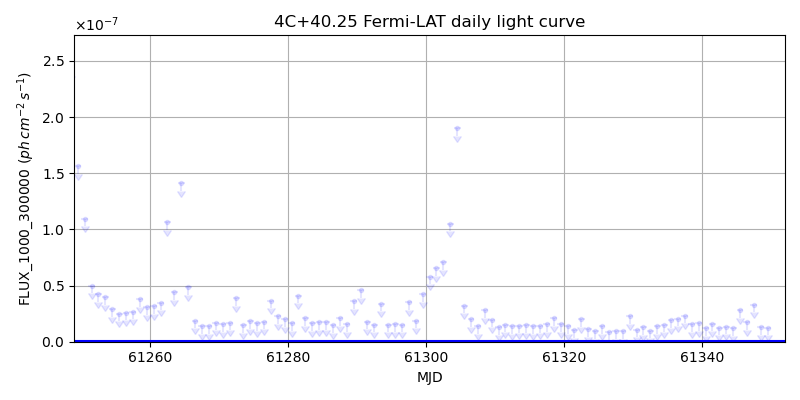
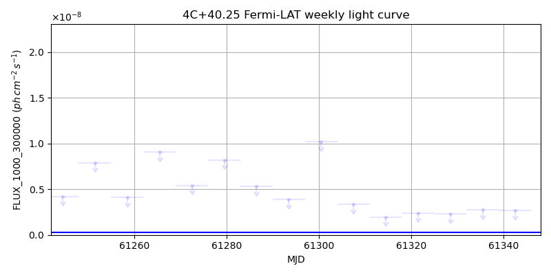

LAT Lightcurve site: https://fermi.gsfc.nasa.gov/ssc/data/access/lat/msl_lc/source/4C_p40d25
NED: Query
Time of last update of this page: UT: 2026-11-13 16:22 (MJD: 61357.682)
| Property | Value |
|---|---|
| R.A. | 10:23:11.52 |
| Dec. | 39:48:14.4 |
| z | 1.254 |
| 3FGL SpectrumType | PowerLaw |
| 3FGL PL Index | 2.73 |
| 3FGL Flux_100_300000 | 1.53e-08 1 / (s cm2) |
| 3FGL Flux_1000_300000 | 2.88e-10 1 / (s cm2) |
| 3FGL Flux >200 GeV | 3.08e-14 1 / (s cm2) |
| 3FGL Extrap. Crab >200 GeV | 0.00 |
| 3FGL Flux After EBL Absorption >200GeV | 1.85e-16 1 / (s cm2) |
| 3FGL EBL Crab Fraction >200GeV | 0.00 |

| MJD | dMJD | Flux | dFlux | Frac3FGL | FracCrab>200GeV | EBLFracCrab>200GeV |
|---|---|---|---|---|---|---|
| 61348.50 | 0.50 | 4.77e-08 | 0.00e+00 | 0.00 | 0.00 | 0.00 |
| 61349.50 | 0.50 | 1.11e-07 | 0.00e+00 | 0.00 | 0.00 | 0.00 |
| 61350.50 | 0.50 | 1.85e-07 | 0.00e+00 | 0.00 | 0.00 | 0.00 |
| 61351.50 | 0.50 | 2.68e-07 | 0.00e+00 | 0.00 | 0.00 | 0.00 |
| 61352.50 | 0.50 | 1.62e-07 | 0.00e+00 | 0.00 | 0.00 | 0.00 |

| MJD | dMJD | Flux | dFlux | Frac3FGL | FracCrab>200GeV | EBLFracCrab>200GeV |
|---|---|---|---|---|---|---|
| 61321.50 | 3.50 | 3.45e-08 | 0.00e+00 | 0.00 | 0.00 | 0.00 |
| 61328.50 | 3.50 | 6.60e-08 | 0.00e+00 | 0.00 | 0.00 | 0.00 |
| 61335.50 | 3.50 | 6.61e-08 | 0.00e+00 | 0.00 | 0.00 | 0.00 |
| 61342.50 | 3.50 | 9.10e-08 | 0.00e+00 | 0.00 | 0.00 | 0.00 |
| 61349.50 | 3.50 | 3.32e-08 | 0.00e+00 | 0.00 | 0.00 | 0.00 |

| MJD | dMJD | Flux | dFlux | Frac3FGL | FracCrab>200GeV | EBLFracCrab>200GeV |
|---|---|---|---|---|---|---|
| 61348.50 | 0.50 | 1.30e-08 | 0.00e+00 | 0.00 | 0.00 | 0.00 |
| 61349.50 | 0.50 | 1.26e-08 | 0.00e+00 | 0.00 | 0.00 | 0.00 |
| 61350.50 | 0.50 | 3.61e-08 | 0.00e+00 | 0.00 | 0.00 | 0.00 |
| 61351.50 | 0.50 | 1.38e-08 | 0.00e+00 | 0.00 | 0.00 | 0.00 |
| 61352.50 | 0.50 | 1.90e-08 | 0.00e+00 | 0.00 | 0.00 | 0.00 |

| MJD | dMJD | Flux | dFlux | Frac3FGL | FracCrab>200GeV | EBLFracCrab>200GeV |
|---|---|---|---|---|---|---|
| 61321.50 | 3.50 | 2.41e-09 | 0.00e+00 | 0.00 | 0.00 | 0.00 |
| 61328.50 | 3.50 | 2.32e-09 | 0.00e+00 | 0.00 | 0.00 | 0.00 |
| 61335.50 | 3.50 | 2.75e-09 | 0.00e+00 | 0.00 | 0.00 | 0.00 |
| 61342.50 | 3.50 | 2.66e-09 | 0.00e+00 | 0.00 | 0.00 | 0.00 |
| 61349.50 | 3.50 | 4.35e-09 | 0.00e+00 | 0.00 | 0.00 | 0.00 |
--------------------------------------------------------- Using user-supplied coords: 10:23:11.52 39:48:14.4 2000 --------------------------------------------------------- FLWO UT night of: 2026-11-14 Local Sid. @ Midnight: 03:09 Sunset (-15.0) (local, UT): 18:35 01:35 Sunrise (-15.0) (local, UT): 05:42 12:42 Moonrise (local, UT): Moonset (local, UT): 20:50 03:50 Moon phase: 0.22 --------------------------------------------------------- AzTime LSID UT Obj_el Obj_az Mn_el Mn_az Sep. --------------------------------------------------------- 18:35 21:44 01:35 -18.0 351.8 20.1 218.2 136.2 19:05 22:14 02:05 -18.6 357.8 16.0 223.7 136.3 19:35 22:44 02:35 -18.5 3.9 11.6 228.6 136.4 20:05 23:14 03:05 -17.7 10.0 6.9 233.2 136.5 20:35 23:44 03:35 -16.3 15.8 2.0 237.3 136.6 21:05 00:14 04:05 -14.3 21.5 -2.2 241.2 136.8 21:35 00:44 04:35 -11.6 26.8 -9.0 244.8 136.9 22:05 01:14 05:05 -8.5 31.7 -14.6 248.2 137.1 22:35 01:44 05:35 -4.2 36.3 -20.4 251.4 137.2 23:05 02:14 06:05 -0.3 40.5 -26.2 254.5 137.4 23:35 02:44 06:35 3.6 44.3 -32.1 257.5 137.6 00:05 03:14 07:05 8.1 47.9 -38.1 260.6 137.8 00:35 03:45 07:35 12.9 51.0 -44.2 263.8 138.0 01:05 04:15 08:05 18.0 53.9 -50.2 267.1 138.2 01:35 04:45 08:35 23.2 56.5 -56.3 270.9 138.5 02:05 05:15 09:05 28.6 58.8 -62.4 275.3 138.7 02:35 05:45 09:35 34.1 60.8 -68.4 281.1 138.9 03:05 06:15 10:05 39.8 62.5 -74.2 289.9 139.2 03:35 06:45 10:35 45.5 63.7 -79.6 306.2 139.4 04:05 07:15 11:05 51.2 64.6 -83.2 343.5 139.7 04:35 07:45 11:35 57.0 64.7 -82.1 35.1 139.9 05:05 08:15 12:05 62.8 63.9 -77.4 61.2 140.2 05:35 08:45 12:35 68.5 61.3 -71.8 73.4 140.4 05:42 08:52 12:42 69.7 60.4 -70.5 75.2 140.5 --------------------------------------------------------- Dark hours >55 deg.: 1.28 srcstart (UT): 2026-11-14 11:24 srcend (UT): 2026-11-14 12:41